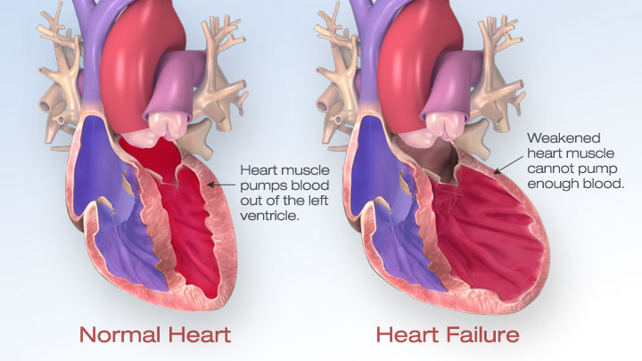
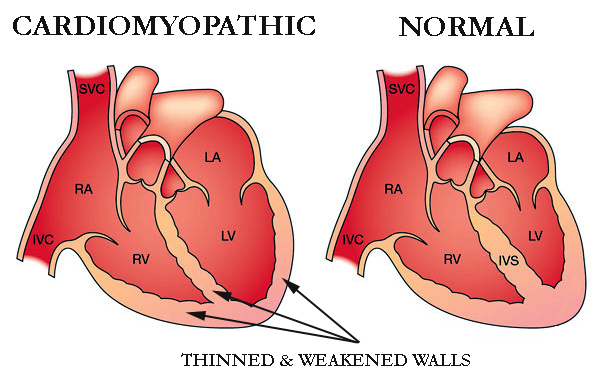

糖尿病和心脏病：两者有何关联？
提及与糖尿病有关的健康问题时，通常我们想到的是那些可以看得见的并发症，如失明或截肢。但还有一种悄无声息却无比致命的并发症，我们必须对它加以了解——它就是心脏病。

1. 冠心病
斑块积聚 — 血液中脂肪、胆固醇、钙和其他物质的积聚 — 致使动脉变窄，从而流向心脏的血量减少。 冠心病可导致胸痛或不适（心绞痛）、心律不齐（心律失常）、心脏病发作甚至死亡

2. 心力衰竭
随着时间推移，冠心病可能会削弱心肌，导致心力衰竭。这意味着您的心脏难以泵出足够多的血液流向周身，因此您可能会出现呼吸短促、易疲倦或腿部、脚踝和脚部肿胀等情况。

3. 糖尿病性心肌病
糖尿病性心肌病会损害心脏的结构和功能，并可导致心力衰竭和心律失常。
可喜的是有一些方法来降低患病风险。读完这篇文章，您已经在认知上迈出了重要的第一步。
- 保持运动：保持运动对心脏大有裨益，特别是进行一些有氧运动，如快走和动感单车，可以强健您的心脏，并促进更好的肺部功能。
- 合理饮食：遵循健康的饮食计划。缺乏食谱灵感？可以查看我们在缤趣（Pinterest）或Instagram上的食谱，或者到您当地的图书馆借阅一本健康食谱书。关于糖尿病的饮食，可以试试新加坡糖尿病官方主页公布的食谱。该食谱从炒饭到吐司，从韩式拌饭到烤肉串，应有尽有。
- 定好目标并保持健康体重：同时患有肥胖症和糖尿病会对心脏产生有害影响。
如果您担心自己可能会患上心脏病，可与医生讨论相关风险。
免责声明：以上信息仅供参考，无法代替执业医生提供的建议。此信息不应用于诊断健康问题或自我治疗。对于因访问或使用所提供信息而导致的任何损害或损失，勃林格殷格翰公司（Boehringer Ingelheim）概不负责。
参考文献：
[i]心脏基金会，《什么是冠状动脉心脏疾病？》，2018年5月20日。 <https://www.heartfoundation.org.au/your-heart/heart-conditions/what-is-coronary-heart-disease>
[ii]国家心肺血液研究所，《糖尿病性心脏病》，2018年5月21日， <https://www.nhlbi.nih.gov/health-topics/diabetic-heart-disease>
PC-SG-100144 Nov 2018